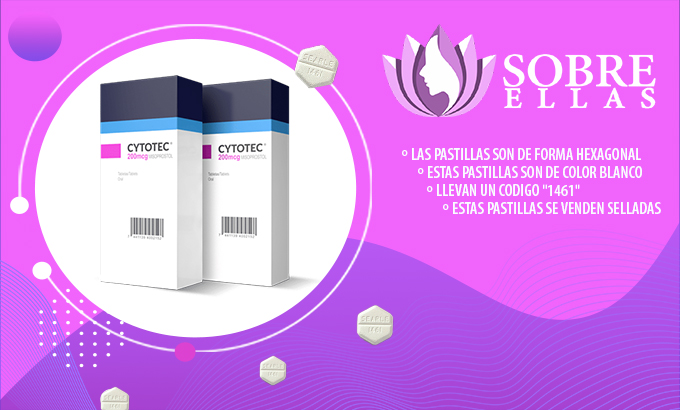
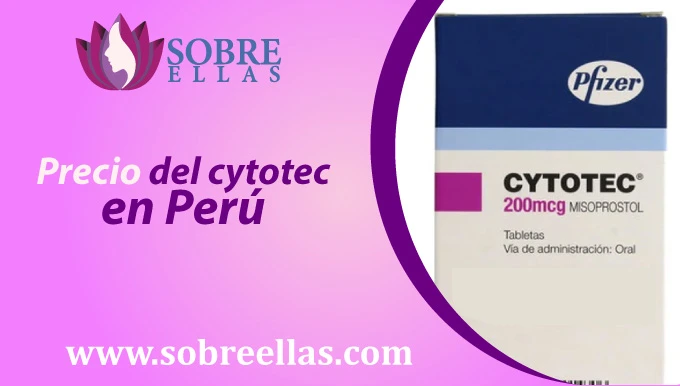
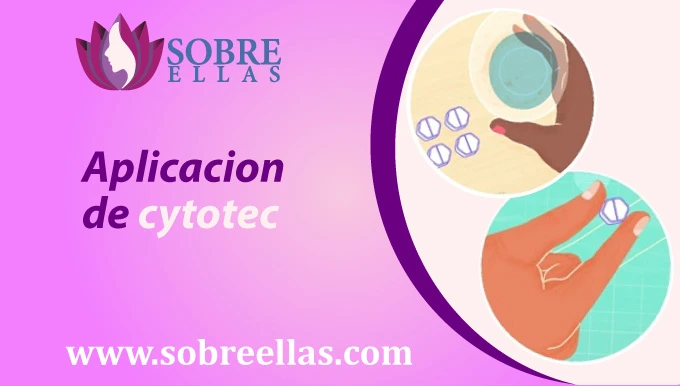

Pastillas Cytotec (Misoprostol) En Perú y el aborto seguro
-
addContenido
El Misoprostol es una de las opciones más seguras para interrumpir un embarazo. Aunque algunos especialistas médicos en Perú pueden ofrecer precios más económicos mediante promociones.
La medicación tiene que ser proporcionada por especialistas en el tratamiento de aborto, para evitar algún tipo de inconveniente, además debe ser un profesional el que te indique la dosis ya que este depende de acuerdo a cada persona, su patología o los efectos secundarios que puedan tener.
¡Aquí podemos asesorarte en el uso de la pastilla Cytotec, y lograr un adecuado uso del Misoprostol, no estás sola!
Cytotec en Perú, también conocido como Misoprostol es una tableta utilizada para inducir un aborto de manera segura a bajo costo. Servicio de consulta por Whatsapp y obtén los medicamentos a nivel nacional.
Este medicamento solo se puede usar: en casos que se confirme por medio de una prueba de sangre o ecografía un embarazo de corto tiempo, ya que sería en vano usar si usted tiene alteraciones hormonales, quistes, fibromas o stress. Las pastillas funcionan cuando se trata de un embarazo temprano.
Deseamos poner en tu conocimiento algunas pautas que serán de ayuda para ti y tu pareja.
Es Muy Importante el Como usted Puede Reconocer Las Pastillas y para ello le explicaremos:
Las pastillas de Cytotec son de color blanco, su forma es hexagonal, deben de tener el número "1461" insertado en una de las caras de la misma, si no es así, no son las originales.

VENTAJAS DE ABORTAR CON CYTOTEC (MISOPROSTOL)
De usar este tratamiento.- No es necesario una intervención quirúrgica.
- Resultados naturales.
- No es necesario contar con la anestesia.
- Relativamente económico en comparación con un legrado.
- Tasa de éxito hasta del 87%.
- Uso privado en la comodidad de tu hogar.
¿COMO SE TOMAN LAS PASTILLAS CYTOTEC?
- El Cytotec De Forma Fácil y Sencilla.
- Antes Debe realizar una prueba de embarazo (obligatorio).
- Debe tomar dos pastillas de forma oral una hora antes de los alimentos.
- Introducir dos pastillas en la cavidad vaginal, es decir dentro de la vagina, introducirlas con el dedo medio usted debe tratar de llegar hasta el cérvix o cuello uterino, se puede añadir dos a tres gotas de agua para esto a la pastilla.
- Es muy fácil colocar Cytotec una vez introducidas las pastillas empuje, por favor. Si está al borde de la vagina pues no funcionaran.
- Debe estar casi cerca al cérvix o cuello uterino. Cuando usted coloca las tabletas Cytotec sentirá una superficie dura, eso quiere decir que llegó al cuello uterino, suficiente hasta ese punto.
- Por favor recuerde orinar, antes de introducir Cytotec, y recuerde lavar sus manos para introducir las pastillas de Cytotec ya que es útero es un órgano indefenso ante una infección.
¿Cómo conseguir Cytotec en Perú?
En nuestra página sobre ellas te ayudamos a quitarte la preocupación por un embarazo no deseado, para que puedas continuar con tus actividades cotidianas sin temor.
Nuestra asesoría es 24/7 bajo la guía de un personal médico altamente calificado para estas situaciones, quienes descartaran cualquier duda o temor que tengas de realizarte este proceso bajo la pastilla abortiva Cytotec en Peru.
Escríbenos a nuestros números de whatsapp y telegram que dejamos a continuación y ponle fin a ese miedo que no te deja dormir.
Precio del cytotec en Perú
El precio de este medicamento abortivo es distinto según el lugar donde te encuentres y se convierte en una opcion muy accesible en caso estes buscando realizar un aborto inducido, pero debes tener mucho cuidado de los revendores o farmaceuticos que quieran aprovecharse de eso. Lo recomendable es averiguar en diversas opciones en páginas de google y elegir lo que mejor se te acomode.
En sobreellas.com contamos con los mejores precios del mercado, que nos permite posicionarnos como la mejor opción para ti, además nuestra tarifa viene con delivery incluido, no tendrás que salir de casa, ya que recibirás el producto de forma rápida, segura y a buen precio.
¿Cuál es el costo y el tiempo que tarda en llegar mi pedido ?
Si te encuentras en Perú, tu pedido cumplirá con la entrega dentro de un plazo no mayor a las 24 horas, dependiendo al lugar que te encuentres y luego de haberlo solicitado y efectuado el pago.
Tenemos diversas facilidades de envío a todo Perú, mediante courier para certificar la seguridad de la entrega. No olvides comunicarte con nosotros en sobreellas.com y realizar tu pedido por medio de los números que aparecen señalados en la parte inferior.
Aplicacion de cytotec
Una vez adquirida la pastilla, el proceso se efectúa de inmediato (el mismo día), nuestros especialistas previamente te enseñarán el paso a paso para obtener un aborto exitoso.
- 1. Debes dividir las 12 pastillas de la tableta y agruparlas en 4 dosis de 3 (30 minutos para cada dosis).
- 2. El medio a utilizar puede ser sublingual o por la vagina.
- 3. Revisa la cantidad de sangrado que presentes por cada dosis.
- 4. Reporta tu estado a nuestro personal médico, para que ellos te orienten como actuar ante cada caso.
- 5. Una vez terminado el tratamiento, se recomienda consumir analgésicos para evitar posibles dolores tras ingerir las pastillas abortivas.
- 6. Informa a tu médico sobre tu condición actual (al dia siguiente) de realizarte el aborto.
¿CUÁLES SERÍAN LOS EFECTOS O SINTOMAS DE ESTE MEDICAMENTO?
Secundarios del Cytotec (Misoprostol):- Agua que sale de los senos, esto se debe a que el suero que se vuelve leche materna, sufre una interrupción esto genera dolor y el suero sale por los pezones.
- Fiebre. Por lo regular estos efectos secundarios varían de una persona a otra, esto depende de cómo tu organismo está asimilando el medicamento.
- Náuseas.
- Vómito.
- Dolor en los senos, esto es porque estamos interrumpiendo el embarazo y el suero que tenía que volverse leche materna se interrumpe y esto genera dolor.
- Síndrome Diarreico.
- Cólicos, estos pueden ser controlados con analgésicos, así como antinflamatorios ejemplo: Paracetamol.